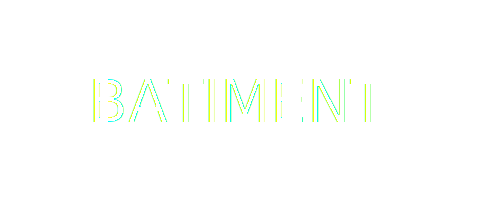

Prestations
Nous développons notre activité dans les secteurs du gros œuvre
principalement, et du second œuvre accessoirement. L’exécution de
travaux de bâtiment et de génie civil est au cœur de notre action.
Notre expérience et nos compétences sont des atouts majeurs
permettant une saine diversification des activités d’Alpha
Edification SA.
Différenciation
Sur un marché difficile et hautement compétitif, nous nous
démarquons par notre approche humaine et professionnelle des
métiers du BTP. Nous recherchons des relations stables, basées sur
la confiance réciproque et la transparence. Nous renforçons
continuellement notre niveau de compétences au service d’une
clientèle exigeante en respectant trois axes prioritaires:
Qualité – Prix – Délais
Entretien et réfection des voiries communales.
Collecteurs et mise en séparatif des réseaux unitaires.
Terrassements, fouilles et canalisations.
Soutènements et confortements
Aménagements extérieurs.
